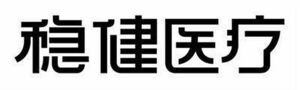

Trade Mark Journal No.2026/005 30 January 2026
WO0000001897179 (3,5,10,24)
Office of origin: China
Date of International Registration:8 September 2025
Date of designation in the UK:
8 September 2025

- Class 3
- Baby wipes impregnated with cleaning preparations; nasal cleaning preparations for personal sanitary purposes; bath preparations, not for medical purposes; wipes impregnated with cleaning preparations; polishing paper; grinding preparations; essential oils for personal use; cotton wool impregnated with make-up removing preparations; beauty masks; body oils for cosmetic purposes; skin care preparations, non-medicated; cotton wool for cosmetic purposes; cosmetics; cotton swabs for cosmetic purposes; mouthwashes, non-medicated; incense; deodorants for pets; air fragrancing preparations.
- Class 5
- Mosquito repellents for application to the skin; mouthwashes for medical purposes; ointments for pharmaceutical purposes; dermatological preparations; oxygen cylinders, filled, for medical purposes; diagnostic reagents for medical purposes; antibacterial handwashes; medicinal oils, other than essential oils; cooling sprays for medical purposes; bath preparations for medical purposes; pharmaceutical preparations for skin care; first-aid boxes, filled; disinfectants; preparations for cleansing the skin for medical purposes; contact lens cleaning preparations; nasal cleaning preparations for medical purposes; medicinal alcohol; deodorants for clothing and textiles; mosquito repellents; eyepatches for medical purposes; absorbent cotton; medical dressings; materials for dressings; sanitary panties; adult diapers; bandages for dressings; cotton for medical purposes; surgical dressings; pants, absorbent, for incontinence; babies' diaper-pants; adhesive tapes for medical purposes; breast-nursing pads; cotton swabs for medical purposes; first-aid kits; swabs for medical purposes; sanitary towels; sanitizing wipes; liquid bandage sprays; gauze for dressings.
- Class 10
- Medical apparatus and instruments; nasal irrigators, electric; respiratory masks for medical purposes; cushions for medical purposes; hearing aids; clothing especially for operating rooms; sterile sheets, surgical; gloves for medical purposes; belts for medical purposes; surgical sponges; cooling patches for medical purposes; thermometers for medical purposes; syringes for medical purposes; surgical apparatus and instruments; surgical staplers; nebulisers for medical purposes; dental apparatus and instruments; physiotherapy apparatus; belts, electric, for medical purposes; surgical drapes; disposable steam-heated patches for therapeutic purposes; protective masks for medical purposes; medical isolation gowns; incontinence sheets; ice bags for medical purposes; childbirth mattresses; sanitary masks; protective clothing for medical purposes; feeding bottles; condoms; surgical implants comprised of artificial materials; athletic tapes; orthopaedic articles; stockings for varices; cervical collars; suture materials.
- Class 24
- Gauze [cloth]; non-woven textile fabrics; wall hangings of textile; felt; disposable towels; face towels of textile; cloths for removing make-up; bath linen, except clothing; household linen; baby buntings; covers [loose] for furniture; compressed bath towels; bed linen; covers for duvets; banners of textile.
Winner Medical Co., Ltd.
Representative: Chofn Intellectual Property, 1217, Zuoan Gongshe Plaza 12th Floor, , 68 North Fourth Ring Road W., Haidian, 100080 Beijing, CHINA